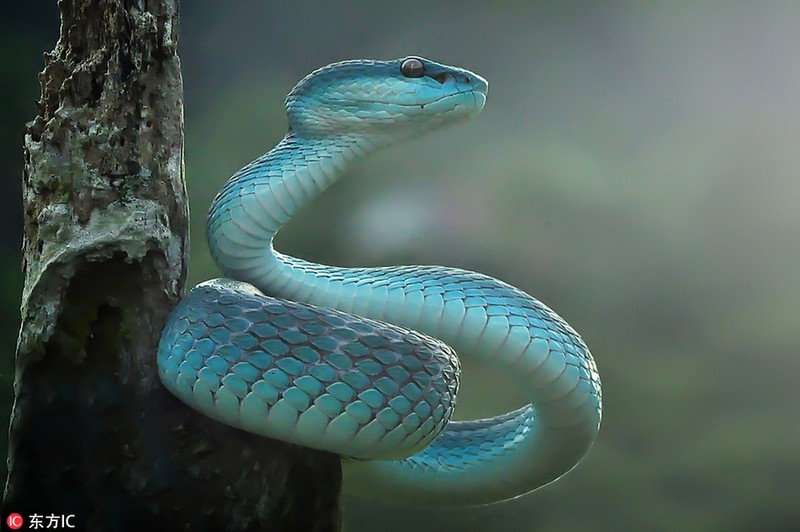

Red-tailed Green Snake (two-part nomenclature: Trimeresurus albolabris) belongs to the Green Snake Family (Viperidae), Squamata (Squamata)
This species is extremely toxic among green snakes, its body and reddish brown tail, the maximum length of about 60 cm with a weight of about 300 grams. The total length of the male is 600 mm, the female is 810 mm long; length of the tail for males 120 mm, females 130 mm. In rare cases, there are long-lived ones weighing nearly 500 grams
This is also a special species because in the family snake family only red-tailed viper is the type of offspring, they are not like some other snakes that hatch eggs but after being fertilized, they stay right in the womb and crank into a separate fetus like that of an animal, during the incubation period, the mother will still have normal activities, but at the time of giving birth, the abdomen of the anus will tear and the entire snake will come out, sometimes That is the end of the life of the mother snake. When a mother is pregnant, her venomous structure is most concentrated and most aggressive.
This snake lives mainly in the high mountains and in the deep forests of the Truong Son range, mountainous areas in the Northwest region of Vietnam, currently there are few Can Tho. Recently in Quang Ngai and in Nam Dan - Nghe An also. In the recent fall-winter of 2014, they have been distributed to Da Nang city. Most of the time the river in the trees, so the skin is green to be easily camouflaged. The vision of green snakes is very good at night but in contrast the daytime vision is weak.
Scorpion, also known as black-gold snake, snapper, tu dong dong (Tay ethnic group), wild-boiled turtles (Thai ethnicity) India, Bangladesh, South China and Southeast Asia. It is the longest species in the genus Nia.
This species is found in the entire sub-region of India-China, peninsular Malaysia and archipelago and South China.It was recorded from India through Maharashtra, Bihar, Jharkhand, Madhya Pradesh, Chhattisgarh and Andhra Pradesh, via Myanmar, Cambodia, Thailand, Laos, Vietnam and China (including Hong Kong) south to Malaysia. and the main islands of Boneo Indonesia (Java and Sumatra), as well as Singapore.In India, it has been recorded from Northeast India, West Bengal, Orissa, parts of Maharashtra, Bihar, Jharkhand, Madhya Pradesh, Chhattisgarh and Andhra Pradesh. It has been recorded in Bihar and Orissa and as far south and west as Hyderabad and Warangal and the Awadh, Godavari and Mahanadi valleys. In Maharashtra it is found in the Chandrapur & Gadchiroli counties.
Scorpions live in a variety of habitats, from bare mountains, open forests, grasslands, along stream brooks and upland fields. They live in termite mounds and caves of rodents, in tree hollows and rock alleys.The pair snakes live singly, and during the day they curl up in caves and grass, and they are often slow. They are often seen when it rains. At night the snakes are active and go out to eat on the banks of the fields near the forest, along streams and in puddles. Scorpions do not hunt prey but they often lie in wait for their prey to pass. They swim well and often crawl under the fire.The main food of a scorpion is another snake, but they also eat fish, frogs, and snake eggs. Among the snakes that are eaten by scorpions are: Xenochrophis piscator, Amphiesma stolatum, Ptyas mucosus, Ptyas korros, Boiga trigonata.Female scorpions lay and guard their eggs between April and May each year.
A monocle, also known as the land cobra, also has names like the single-eyed cobra, fertile cobra, and waxy cobra (Naja kaouthia), a species of Elapidae, widely distributed from Central Asia to South Asia. This species was first described by Lesson in 1831.
The cobra is distributed from India in the west to China, Vietnam and Cambodia. It is also present in the Malay peninsula and is native to Bangladesh, Bhutan, Myanmar, Laos, Nepal and Thailand.
This is a spawning species. The female lays 16 to 33 eggs in a nest. The incubation period is from 55 to 73 days. Lay eggs in January to March. The female often stays in the egg soup. Several recorded cases of cooperation between males and females were reported in Naja naja x Naja kaouthia - hybrids. The young hatchlings are 200 - 350mm long and have a round neck.
Viper Russell's Other names are Snake Snake and the common name in Vietnam is Nua, Butterfly Tiger Snake (two-part nomenclature: Daboia russelii) is a poisonous snake in the genus Daboia Old World venomous snake. D. russelii of the genus Daboia is distributed throughout Asia from the Indian subcontinent, much of Southeast Asia, southern China and Taiwan. It is a member of the Indian Quartet of Snake. It is the species that causes the majority of snakebite and death in the world due to many factors such as its frequent occurrence in places where people live. Its name is given to Patrick Russell (1726–1805), a Scottish reptile researcher who described many Indian snakes, and the genus is named after Hindi meaning "that lies hid", or "the lurker. " There are two currently recognized subspecies.
This venomous snake is often confused by people and hunters with pythons due to their similar pattern on their skin as well as their pointed triangular heads, which they call them nine-pointed pythons due to confusion with the seven. Heat sensors along the nasal wave are found only in pythons and a few non-toxic snakes. Distinguishing them is not difficult for experienced people, Russell's snake skin is more rough because the scales are endemic to the snake, the pattern is round and oval in shape, evenly spaced and separated. short in a straight line, the average length of 1.2 meters (can grow to 1.6 meters), while in the pythons, the patterns are irregular and contiguous, messy shapes, not in an orderly fashion. Anyway, although they follow a straight line, except for the head and tail, the body of the python is very large, a trait suitable for hunting and swallowing large mammals, more than 2 meters long for growing children. and 4 meters or more for adults, the head of the python in addition to the nostrils also has seven heat sensor niches specifically for hunting.
8 Ton That Thuyet, My Dinh, Tu Liem,
Ha Noi, Viet Nam.
0966469746 (Do Van Huan)
0666729716 (Nguyen Minh Nghia)
0522697743 (Duong Thanh Binh)
0849818969 (Le Van Phuong)
0373485924 (Nguyen Thanh Lam)
KawasakiZoo@gmail.com